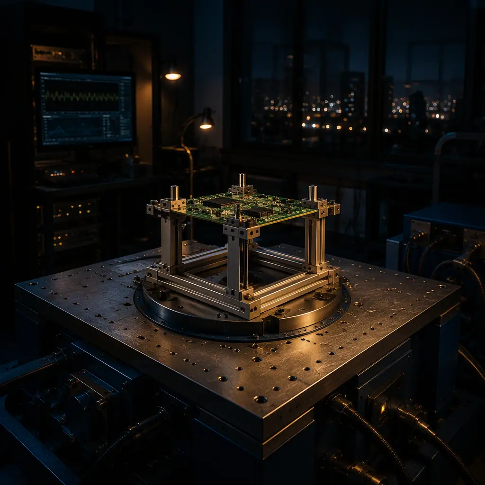
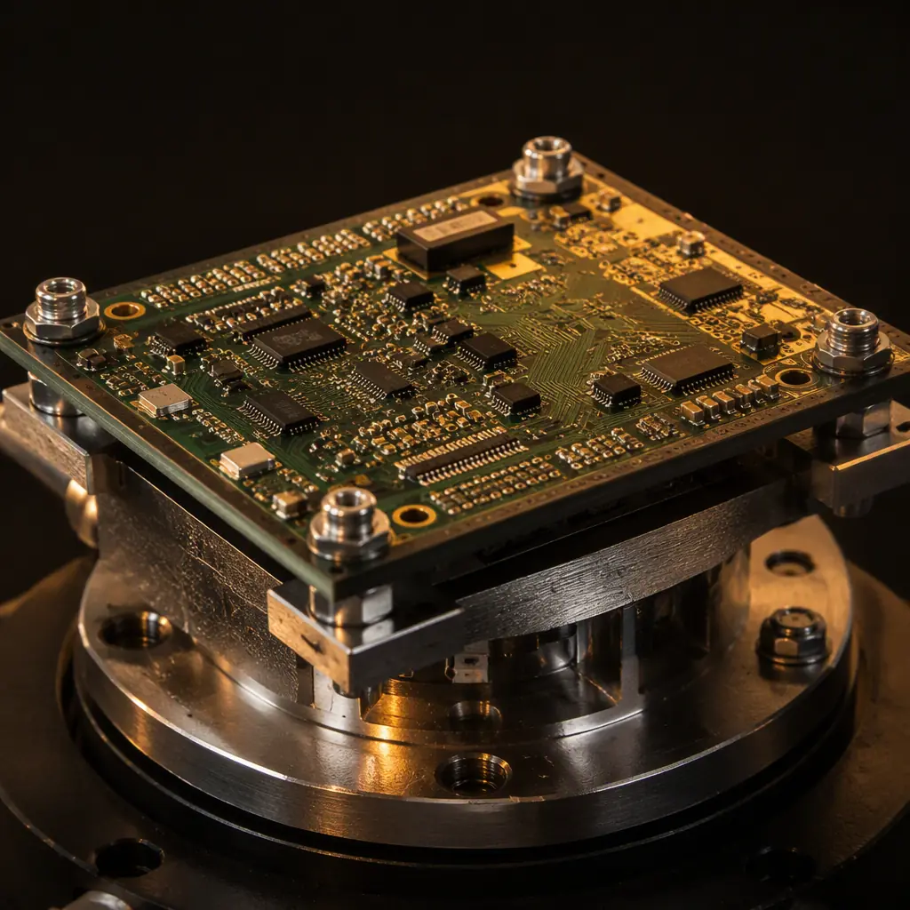
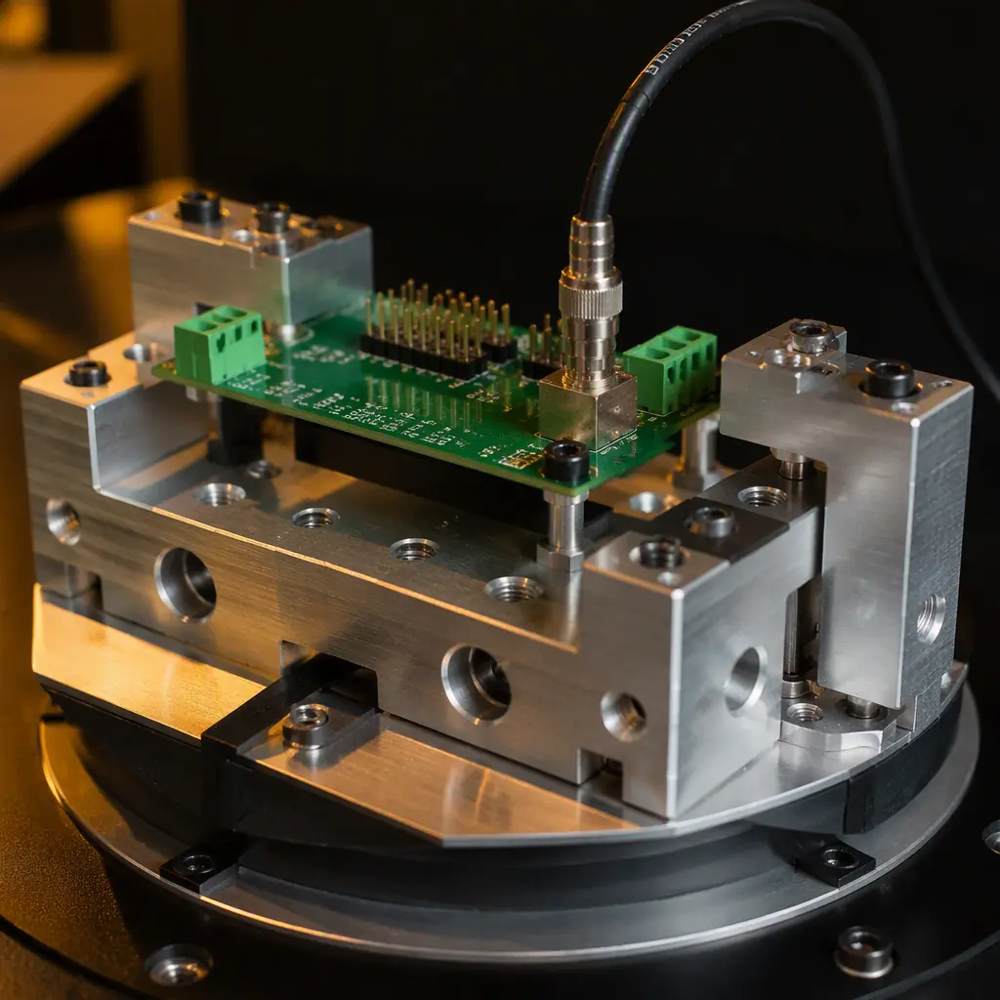

Vibration and mechanical shock are responsible for a disproportionate share of field failures in automotive, drone, rail, and industrial electronics — yet they are the most commonly skipped qualification tests in prototype-to-production programs. A board that passes every electrical test at the bench can develop cracked BGA balls, lifted pads, or fractured through-hole barrels after a few thousand kilometers on a vehicle. The reason is simple: bench testing applies zero mechanical stress, and most vibration damage is cumulative.
At Huaxing PCBA, we qualify assemblies for automotive (IATF 16949), drone, and industrial customers using electrodynamic shaker systems with sine, random, and shock profiles per JESD22 and MIL-STD-810. Our reliability lab has supported 120+ qualification programs over the past three years, with vibration-induced failure rates at first qualification dropping from 18% to under 4% as test fixtures and design-for-vibration rules matured. This guide covers the standards, the test setup decisions that actually change results, and the failure modes to watch for.

Which Vibration Standard Applies to Your Product?
The first decision in any vibration test program is the governing standard, and the wrong choice means either over-testing (wasted schedule and cost) or under-testing (field failures). Three standards dominate electronics qualification, and they answer different questions.
JEDEC JESD22-B103 — The Component and Board-Level Baseline
JESD22-B103 covers sinusoidal vibration for semiconductor and board-level qualification. It specifies frequency sweeps from 20 Hz to 2,000 Hz at acceleration levels typically 1.5-20 G, with test durations of 4 hours per axis (often reduced to 20 minutes in accelerated variants). This is the standard to cite when your customer or component vendor requires a baseline vibration rating — it is the most commonly referenced board-level vibration document in the electronics industry.
JEDEC JESD22-B104 — Mechanical Shock
JESD22-B104 defines mechanical shock testing using half-sine pulses, typically 1,500 G at 0.5 ms duration (Condition C) or 500 G at 1.0 ms (Condition B), applied 5 times per axis across 6 axes — 30 total pulses. This simulates handling drops, rough assembly, and transportation impacts. Note that JESD22-B104 is a component-level test; for populated board assemblies, many programs use the drop and impact profiles from IEC 60068-2-27 instead, which allow the fixture and board mass to be included in the calculation.
MIL-STD-810 — System-Level Real-World Profiles
MIL-STD-810H Method 514.8 (vibration) and Method 516.8 (shock) define system-level profiles based on real transport and operational environments: wheeled vehicle, tracked vehicle, helicopter, jet aircraft, and loose cargo. Random vibration profiles are specified as power spectral density (PSD) curves in G²/Hz across 10-2,000 Hz. Automotive ECU programs commonly reference a modified wheeled-vehicle profile; drone customers reference helicopter or jet profiles depending on mounting location. This is the standard to specify when the product will be mounted on a moving platform.
Key Takeaway: Component-level standards (JESD22) answer "does this package survive vibration?" while system-level standards (MIL-STD-810) answer "does this assembly survive its environment?" — most field failures come from the assembly-level interactions the system profiles are designed to catch.
Random vs Sine vs Shock: What Each Test Actually Proves
Three excitation types appear in vibration programs, and each exposes a different class of weakness. Choosing the right mix is more important than choosing the highest G number.
Sine Sweep — Finding Resonances
A sine sweep excites one frequency at a time, sweeping logarithmically from low to high (e.g., 10-2,000 Hz at 1 octave/min). Its purpose is resonance discovery: at the board's natural frequency, response acceleration can amplify 5-20× the input, concentrating strain at specific solder joints. A 0.5 mm-thick BGA board clamped on two edges typically resonates between 150-400 Hz — exactly the range where automotive engine and road inputs are strongest. Identifying resonance frequencies lets your design team add stiffeners or adjust mounting points before random testing begins.
Random Vibration — Simulating Real Environments
Random vibration excites all frequencies simultaneously with amplitudes distributed per a PSD profile. It is the best simulation of real-world transport and operation, and it is what drives most cumulative fatigue damage. A typical automotive profile runs 2-4 hours per axis at 1.5-4 G RMS; a helicopter profile can reach 6-8 G RMS. Random testing is where marginal solder joints fail — which is precisely why it is the backbone of most qualification programs.
Shock / Drop — Transient Impact Survivability
Shock testing applies high-amplitude, short-duration pulses (half-sine 30-100 G at 6-11 ms for board-level; up to 1,500 G at component level) to verify survivability of handling and impact events. Unlike vibration, which damages cumulatively, shock failure is usually immediate and catastrophic: cracked ceramic capacitors, fractured BGA balls at package corners, and sheared connector solder joints. Board mass and mounting stiffness dominate shock response — a heavy heatsink can multiply local G forces 3-5× at its mounting points. See our guide on PCB failure analysis methods for how these cracks are identified after testing.
The Test Fixture: The Most Underrated Variable
Two laboratories running the "same" vibration profile on the "same" board can produce completely different results if their fixtures differ. The fixture transfers shaker motion to the board, and a poorly designed fixture absorbs energy, adds resonances, or constrains the board differently than its real-world mounting — invalidating the test.


Rigid Aluminum Fixtures With a First Resonance Above 2,000 Hz
The fixture's own first resonant frequency must sit above the test frequency range — otherwise the fixture amplifies or filters the input spectrum. A machined aluminum plate with 20-25 mm thickness and bolted standoffs typically achieves a first resonance of 1,500-2,500 Hz; bolted steel frames are heavier and shift the resonance lower. For automotive work we use hard-anodized aluminum fixtures with a verified first resonance above 2,000 Hz and document the fixture resonance survey in the test report.
Mounting Replicates Real-World Constraint
A board bolted at all four corners responds differently than one held at two edges or one center standoff. The fixture must reproduce the product's actual mounting pattern — including any gaskets, isolators, or brackets — or the strain distribution across the board will not match reality. This is the most common source of false pass: the test fixture stiffens the board, hiding a resonance that will appear in the field. Drones are a good example: their carbon-fiber frames are far more flexible than an aluminum test plate, so we mount drone boards on a compliant fixture to reproduce frame flex. See our drone & UAV PCB manufacturing guide for the design rules that complement this.
Accelerometer Placement and Control Strategy
Control accelerometers should be mounted on the fixture near the board (not on the shaker table) for closed-loop control, with response accelerometers on the board at the highest-strain locations — typically corners of large BGAs and heavy component mounting points. A control loop running at the fixture while the board resonates at 20× input can over-drive the fixture to compensate, producing test levels far above specification. Modern systems use multi-point averaging control (up to 8 channels) to prevent this. This is a detail worth auditing in any supplier's test report.
Vibration Failure Modes: What Breaks and Why
Understanding failure modes turns a vibration test from a pass/fail gate into a design-improvement tool. The failure mechanisms below account for the large majority of vibration-induced PCB failures in our qualification history.
| Failure Mode | Typical Location | Common Trigger | Detection Method |
|---|---|---|---|
| BGA ball crack (corner balls) | Package corners, largest BGAs | Board flex at resonance | X-Ray / cross-section |
| MLCC capacitor crack | Large 1206/1210 ceramics | Shock impulse, board flex | Acoustic micro-imaging |
| Through-hole barrel fracture | Connectors, heavy components | Cyclic bending at plated barrel | Resistance monitoring |
| Lifted / fractured pad | High-strain board edges | Resonance amplification | Visual / X-Ray |
| Connector solder joint fatigue | Board edge connectors | Mass × acceleration leverage | Event detector / functional |
Continuous resistance monitoring during vibration — using event detectors set to flag opens above 1,000 Ω for 1 μs or longer (per IPC/JEDEC-9702) — is essential. Intermittent opens that only occur under vibration disappear the moment the shaker stops; without in-situ monitoring, a cracked ball that passes post-test functional checks will fail in the field within months. Pair this with burn-in and environmental stress screening to catch early-life failures before shipment.
Design Rules That Reduce Vibration Risk Before Testing
Every vibration failure we have analyzed traced back to a design decision that increased strain concentration. Applying these rules at layout time is dramatically cheaper than discovering them on a shaker.
Keep Large Components Away From Board Edges
Board flex is highest between mounting points, not at the edge clamps themselves — but heavy components amplify local strain wherever they sit. Rule of thumb: keep components over 5 g in mass at least 10 mm from mounting holes and board edges, and avoid placing tall components (connectors, electrolytic capacitors, transformers) at board corners. When a heavy part cannot move, add a standoff or stiffener under it to reduce local flex.
Use Through-Hole for High-Mass Components
For parts above roughly 10 g that face sustained vibration, through-hole mounting with a full plated barrel distributes load through the board thickness instead of concentrating it on surface pads. Where SMT is mandatory, larger pad sizes, glue dots, or underfill for BGAs and QFNs dramatically improve survival — underfilled BGA assemblies in our tests survive 3-5× more vibration cycles than non-underfilled equivalents. Automotive programs routinely require underfill for packages above a defined mass threshold. Our BGA assembly guide covers underfill selection and process windows.
Add Stiffeners and Reduce Board Aspect Ratio
A stiffening rib, metal-core section, or thicker board (1.6 mm vs 1.0 mm) raises the first resonant frequency and reduces deflection under load. Increasing board thickness from 1.0 to 1.6 mm roughly doubles bending stiffness (stiffness scales with thickness cubed). For large boards, moving mounting points inward from the corners — or adding a center standoff — cuts the unsupported span where resonance develops. If your design already uses metal-core technology, see our metal core PCB guide — MCPCB's aluminum base also provides inherent vibration damping.
How to Build a Vibration Qualification Plan
A pragmatic qualification plan scales with product risk and volume. For a low-volume industrial sensor, a reduced sine sweep plus a 2-hour random profile per axis may be sufficient; for an automotive ECU bound for production, the full sequence below is standard.
Step 1: Define the Environment and Reference Standard
Identify the mounting location, expected input spectrum, and the customer's governing standard. For automotive, capture the OEM's own vibration spec — most OEMs define PSD profiles tighter than the generic MIL-STD-810 wheeled-vehicle curve. Document the test conditions (temperature, whether the board is powered, monitoring method) before the first shaker run; changing conditions mid-program invalidates comparability.
Step 2: Fixture Survey and Low-Level Debug
Run a fixture resonance survey and a low-level (0.5 G) sine sweep on the populated board to identify resonances and validate the control strategy. This is also the moment to confirm event-detector channels are working and to baseline resistance values. Fix any fixture issue now — a full random profile run with a bad fixture wastes days and produces meaningless data.
Step 3: Full Profile Runs With In-Situ Monitoring
Run the full random (and/or sine) profile per axis with continuous resistance monitoring, then the shock sequence. After each axis, run functional test and document any failures with photographs and X-Ray. Track failures by mode — if the same mode appears on multiple samples, the fix is a design change, not a test adjustment. Escalating failures into the root-cause analysis workflow at this stage is what separates a qualification program from a checkbox exercise.
Procurement Tip: When a supplier claims "vibration tested," ask for three things: the standard and profile used (PSD curves, not just "5G"), the fixture design and its resonance survey, and the in-situ monitoring data — not just the final pass/fail. These three details separate real qualification from a shaker running with no one watching.
What This Means for Your Next PCB Order
Vibration testing is not an optional checkbox for boards that ride on moving platforms — it is the cheapest insurance against the most common class of field failure. The standards are clear, the failure modes are known, and the fixture details are auditable. At Huaxing PCBA, our reliability lab runs sine, random, and shock profiles with continuous resistance monitoring and documents every parameter in the qualification report. Our engineering team reviews your mechanical environment at the DFM stage — recommending mounting patterns, component placement adjustments, and test profiles before you spend a single dollar on tooling. Read our testing methods overview to see how vibration fits the full qualification flow, or contact our engineering team to discuss your product's environment.